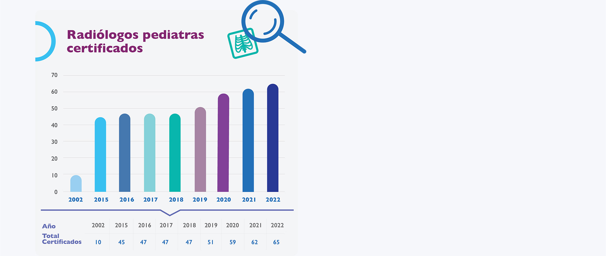

La importancia de elegir a un especialista
adecuado para los pacientes pediátricos:
el radiólogo pediatra
Dra. Aída Pérez Lara
Calificación agregada en Radiología Pediátrica,
Consejo Mexicano de Radiología e Imagen
aidapl@yahoo.com

Radióloga Pediatra
realizando un
ultrasonido
La sociedad en la que vivimos ha sido testigo del vertiginoso avance de la ciencia y la tecnologia, que han servido de gran apoyo para el desarrollo de la medicina moderna, en la cual ya no se concibe la atención al paciente sin el empleo de herramientas como las que aporta el campo de la Imagenología. La sociedad identifica al radiólogo como un médico especialista que juega un papel importante en el diagnóstico y manejo de sus enfermedades. De la misma manera, los médicos clínicos identifican al radiólogo como parte de su equipo multidisciplinario pues gran parte de su actividad asistencial se basa en estudios de imagen.
Se conocen las aportaciones de la Imagenología a través de especialistas en neurorradiología, terapia endovascular, intervencionismo, en el diagnóstico de la patología mamaria, y la utilidad de las diversas modalidades de la imagen en todas las ciencias médicas, cuya mayoría se desarrolló con base en padecimientos de población adulta. Pero existe el rubro específico de la Radiología Pediátrica, que está encaminada precisamente al grupo de edad que actualmente integra la cuarta parte de la población mexicana, con más de 30 millones de niños menores de 15 años (31,755,284), de acuerdo con el último Censo Nacional de Población del 2020.1
La Radiología Pediátrica tiene un campo de aplicación extensa.
Si bien un buen radiólogo general puede atender problemas comunes de la patología pediátrica, hay áreas que dependen de especialización y entrenamiento concreto, como es el campo de la patología congénita, la imagen neonatal, la oncología y sobre todo la etapa del crecimiento y desarrollo del niño. Este entrenamiento se realiza en hospitales de tercer nivel de atención pediátrica a través de un curso de Alta Especialidad de un año, avalado por las mejores universidades de México.
En Estados Unidos, el Dr. John Cafffey sentó las bases sobre las que se ha ido desarrollando la subespecialidad en Radiología Pediátrica. En los años 40, en el Hospital Infantil de México, el Dr. Carlos Manzano Sierra dio inicio al entrenamiento formal en Radiología Pediátrica, con base en las experiencias y enseñanzas del Dr. Caffey.2 La formación de la Sociedad de Radiología Pediátrica (Society for Pediatric Radiology) con sede en Boston propulsó la investigación y el desarrollo en este campo de la imagen, que en la actualidad se considera de apoyo invaluable para la Pediatría clínica.
Todas las modalidades de imagen pueden aplicarse a la población pediátrica. El radiólogo pediatra tiene la capacidad de diagnosticar problemas médicos y quirúrgicos mediente el empleo de técnicas de radiología general, ultrasonido (US), tomografía computada (TC) o resonancia magnética (RM).3
Una de sus principales funciones es la selección del método de imagen más apropiado para el paciente y garantizar que las pruebas se realicen de manera adecuada y segura, estando capacitados para la interpretación de los resultados que derivan en un diagnóstico adecuado.3 Las buenas prácticas en imagen pediátrica deben aplicar los rayos X con responsabilidad, ya que en la edad pediátrica hay mayor actividad celular (actividad mitótica) y mayor sensibilidad a la radiación.4. En 2008 se creó en Estados Unidos una iniciativa de protección llamada Image Gently que tiene la finalidad de cambiar las prácticas en radiología mediante la concientización de la importancia de la disminución de las dosis de radiación en pacientes pediátricos.5 También se aplica el concepto ALARA (As Low As Reasonably Achievable), que induce a aplicar dosis de radiación tan bajas como sea posible, según lo marca la Comisión Internacional de Protección Radiológica.6
Para ser radiólogo de niños se debe tener, además de un entrenamiento médico adecuado, una personalidad específica
De inicio se debe ser empático con los niños, ser paciente, conocer técnicas de mitigacion del estrés, tener la habilidad de hacer de los estudios un juego, comprender la preocupación de los padres y tener la capacidad de diálogo con ellos y sus hijos, así como saber explicar los procedimientos de manera honesta y sencilla, para lograr la cooperación máxima y la realización de estudios de calidad diagnóstica.
En los hospitales de tercer nivel, tanto públicos como privados, se cuenta con Radiólogos Pediatras que ayudan a los clínicos a diagnosticar y tratar a sus pacientes.

RM de cráneo. Corte coronal en T2. Paciente con dilatación del ventrículo izquierdo y leucomalasia periventricular como secuelas de encefalopatía hipóxico-isquémica neonatal.
Los pediatras de una terapia intensiva neonatal, por ejemplo, se apoyan en estos especialistas para tomar decisiones importantes en el tratamiento y seguimiento de sus pacientes, y los métodos de imagen contribuyen a determinar pronósticos y pautas de terapia de rehabilitación en este particular grupo de atención.
El crecimiento y desarrollo del niño puede ser monitoreado mediante estudios de imagen que no resultan excesivamente caros para los pacientes. Del mismo modo, el Oncólogo Pediatra basa buena parte del diagnóstico, tratamiento y seguimiento de sus pacientes en estudios de imagen, particularmente TC, RM o tomografía por emisión de positrones (PET-CT, PET-RM), supervisados y revisados por Radiólogos Pediatras especialistas en cada método de imagen.
Es importante que los Pediatras y sus pacientes conozcan las bondades de la Radiología Pediátrica ejercida por especialistas en este campo. La certificación otorgada a por el CMRI es una garantía de entrenamiento adecuado, de constante actualicación y de que la atención de los pacientes pediátricos se realizará con eficiencia y responsabilidad, garantizando mantener al paciente en un ambiente de seguridad y confianza.
